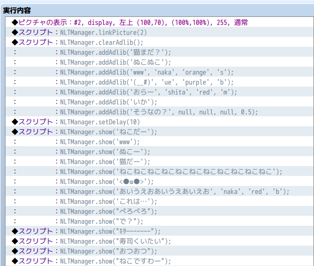

ニコニコっぽいテキストを表示するプラグイン
概要
現代もののゲームをやるとニコニコ動画的な動画サイトが登場することがあります。そこで、ツクールMVでもそういった表現ができるようにするプラグインを作成しました。
プラグインの仕様、雰囲気は下記動画参照です。
使い方

こういう使い方をします。細かい説明は以下で解説します。
ピクチャとリンク
まずはじめに本プラグイン対象となるピクチャを指定する必要があります。
ピクチャ番号が1のときは、スクリプトコマンドで NLTManager.linkPicture(1); と指定します
文字の表示
文字の表示方法ですが、一番シンプルな方法は以下です。
NLTManager.show('こんにちは');
文字位置指定は以下でできます。ニコニコと同様に naka、ue、shitaに対応しています。デフォルトはnakaです
NLTManager.show('こんにちは', 'ue');
文字色指定は以下でできます。色は white、black、red、blue、orange、green、pink、cyan、purple、yellowです。デフォルトはwhiteです
NLTManager.show('こんにちは', 'ue', 'red');
文字サイズ指定は以下でできます。 使えるのはb、m、s です。デフォルトはmです。big medium、small の略です
NLTManager.show('こんにちは', 'ue', 'red', 'b');
基本的に文字のy位置はランダムです。なので実行ごとに違う結果になります。しかし、演出上必ず決まった位置に表示したい場合もあると思います。
そのときは、以下のように指定できます。 0 ≦ y < 1 の間で指定してください。 0.5で真ん中です。
NLTManager.show('こんにちは', 'ue', 'red', 'b', 0.5);
設定する必要がない、デフォルトで構わない項目はnullでも可
NLTManager.show('こんにちは', null, null, null, 0.5);
ディレイ
NLTManager.show('こんにちは');
NLTManager.show('おはよう');
NLTManager.show('こんばんは');
とすると、３個が同じx位置に表示されてしまい、不自然な感じになるので、それぞれの間にデフォルトで10フレームのディレイが設けられています。
このデフォルトを変えたい場合は以下のようにします。
NLTManager.setDelay(5);
アドリブ
何も表示するテキストがない場合にランダムに表示されるテキストを登録します。パラメータはNLTManager.showと同じです
NLTManager.addAdlib('www', 'naka', 'orange', 's');
この追加した文言は場所移動、セーブ、ロードなどをしても保持されます。なので初期化したいときは明示的に以下のスクリプトを実行してください
NLTManager.clearAdlib();
リンク解除
途中でピクチャと本プラグインの関係を絶ちたい場合は以下を実行します
NLTManager.unLink();
また単純にピクチャを消去すればリンクは解除されます
フォントの設定
font/gamefont.css 内に以下のように本プラグインで使用したいフォントを指定します
@font-face {
font-family: ForNico;
src: url("noto.otf");
}
そして、プラグインパラメータに Font とあるのでこれの値を上記例だと「ForNico」に設定します
透明ピクチャを活用
マップ画面全体に適用したいとか、ある領域に描画したいとか、そういうときは透明なピクチャを表示してそれにリンクしてください。
マップ画面全体の場合は816x624の透明画像をピクチャとして表示して、それを本プラグインの対象にするという方法です。
ダウンロード
制限事項
- ツクールで使用できる制御文字については実装していません。変数値、アクター名は実装する価値はあると思っています。制御文字の文字色、文字サイズ、アイコンはニコニコ感がなくなるので実装する予定はありません。
- 複数ピクチャに対して同時に本プラグインを適用することはできません。最後に
NLTManager.linkPicture(n)を実行したピクチャが対象です。
ライセンス
Released under the MIT license